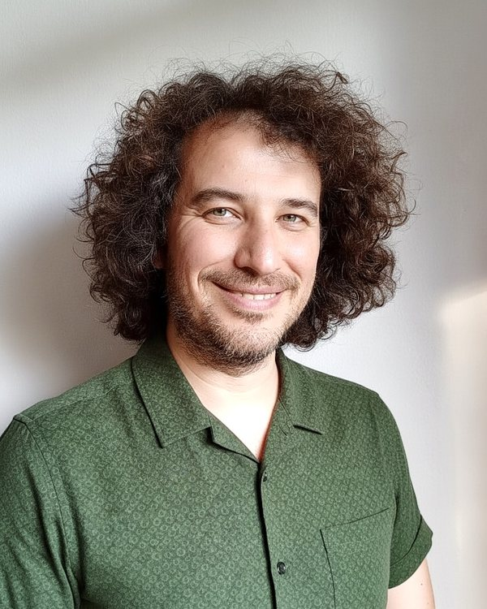
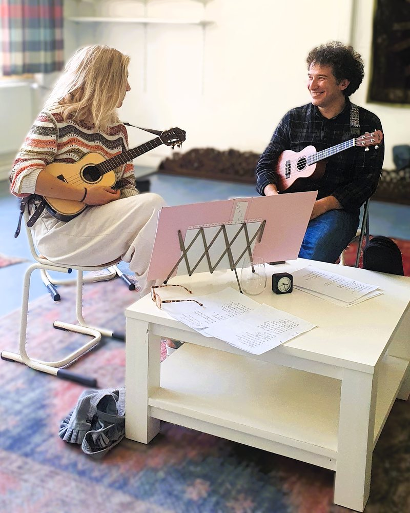
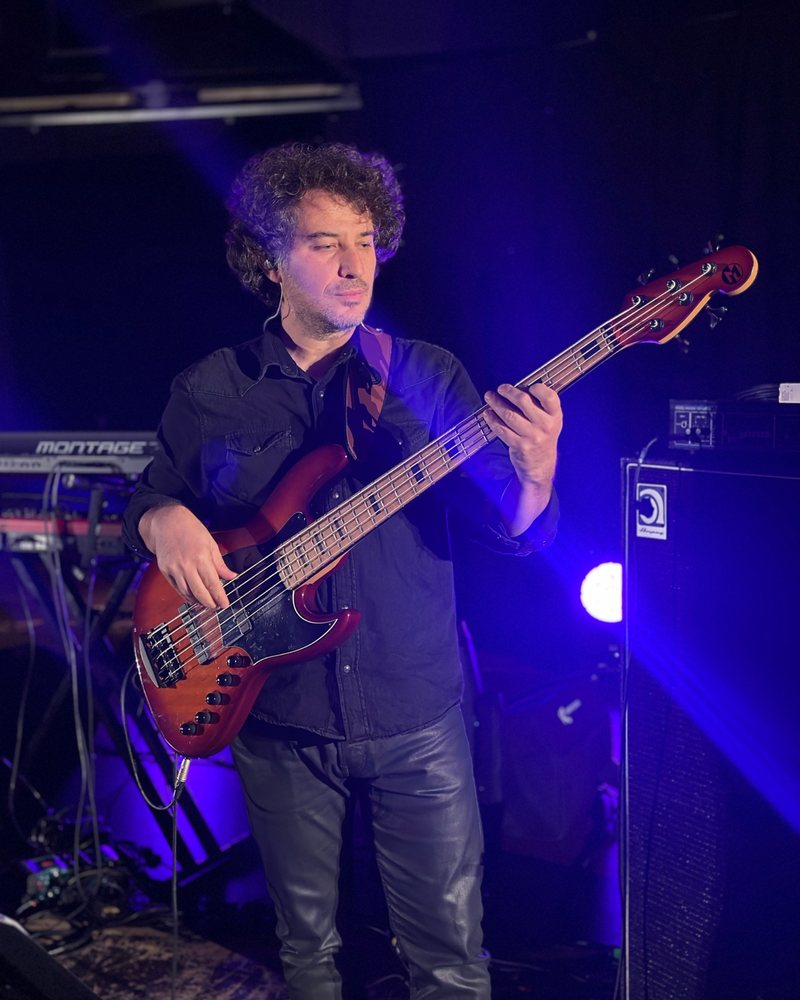
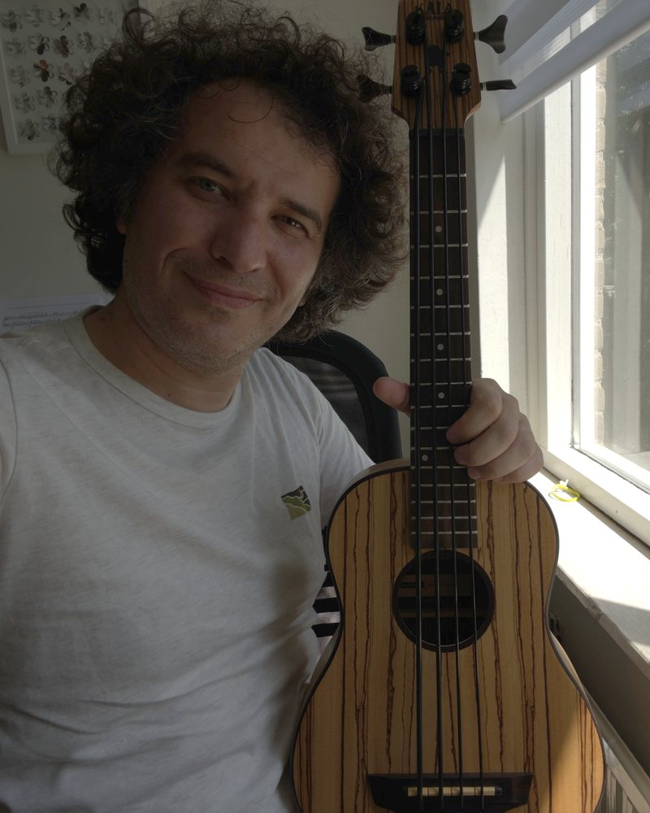

Over Yasin

Hallo! Mijn naam is Yasin Hanonu. Ik ben professioneel fluitist, bassist, dirigent en muziekdocent met meer dan 27 jaar ervaring in muziekonderwijs en podiumoptredens. Met veel enthousiasme deel ik mijn passie, kennis en ervaring met leerlingen van alle leeftijden.
Iedere leerling is anders. Daarom stem ik mijn lessen af op de leeftijd, het niveau, de interesses en de persoonlijke doelen van de leerling. Mijn lessen combineren een professionele en gestructureerde aanpak met ruimte voor creativiteit, muzikale expressie en vooral plezier in het muziek maken.
Lessen
🎹 Piano
Voor kinderen vanaf 4 jaar, jongeren en volwassenen. Spelenderwijs leren en een goede basis leggen.
🎶 Dwarsfluit
Van beginner tot gevorderd.
🎸 Basgitaar
Techniek, groove en improvisatie.
🌴 Ukulele
Individuele lessen en groepslessen voor kinderen en volwassenen.
📖 Muziektheorie en solfège
Voor alle niveaus, ook als voorbereiding op toelatingsexamens van conservatoria.
🎓 ABRSM-examenvoorbereiding
Professionele begeleiding volgens het ABRSM-curriculum, voor praktijk- en theorie-examens.
🎼 Samenspel en ensemblecoaching
Samen musiceren en begeleiding van ensembles.
✍️ Compositie en arrangeren
Vooral voor blaasensembles en orkesten.
Proefles
Kennismaken zonder verplichting. Vraag gerust naar de mogelijkheden.
Professionele begeleiding volgens ABRSM
ABRSM staat voor Associated Board of the Royal Schools of Music, een internationaal erkende organisatie voor muziekonderwijs en muziekexamens. Leerlingen kunnen zich voorbereiden op praktische instrumentexamens en muziektheorie-examens, afhankelijk van hun niveau en leerdoelen. Mijn lessen richten zich op een stevige muzikale basis, technische ontwikkeling, muzikaal gehoor, notenlezen, expressie en zelfvertrouwen.
Opleiding en ervaring
- Bachelor- en masteropleiding in muziektheorie en orkestdirectie
- PhD in muziektheorie
- Muziekopleiding voor Muziekdocent (Amsterdam Conservatorium)
- Meer dan 27 jaar ervaring in muziekonderwijs en uitvoerende muziekpraktijk
- Dirigent van harmonieorkesten, fluitist in symfonieorkesten en bassist op pop- en jazzpodia
- Arrangeur en producer, met eigen muziekproducties
- Docent muziektheorie, solfège, dwarsfluit, basgitaar, ukulele en piano aan conservatoria en muziekscholen
- Ruime ervaring met individuele lessen en groepslessen voor kinderen, jongeren en volwassenen
In beeld



Contact
Wil je meer weten of een proefles plannen?
📍 Castricum